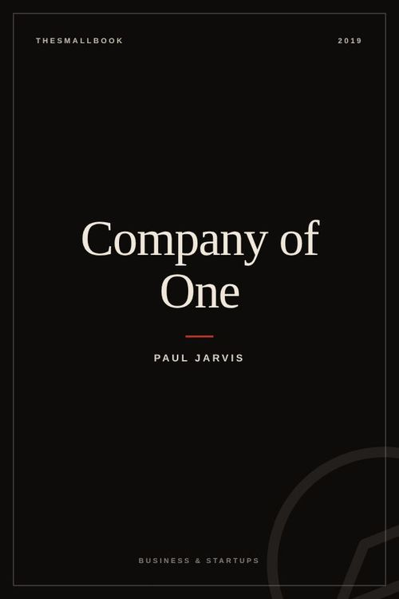

Library › Authors › Paul Jarvis
Books by Paul Jarvis
Paul Jarvis has one book in the library. Every book here is read down to the big idea, the lessons, the lines worth keeping and the actions worth taking. Start with the summary, then buy the full book if it earns a place on your shelf.

Company of One
2019 · 8 min · 6 lessons
Growth is not a strategy; it's a religion most businesses die converting to. Build a company that stays small on purpose and pays you in freedom.
Silicon Valley's default - raise, scale, exit - treats growth as oxygen. Jarvis's heresy: for most people, growth is a TAX - more employees, more overhead, more meetings, more risk, less of the actual work you loved - and a COMPANY OF ONE (a business that deliberately QUESTIONS growth, whatever its headcount) is the saner design. Its four traits: RESILIENCE (adaptable generalists survive shocks that kill leveraged giants), AUTONOMY (control over time and choices - the actual point of quitting your job, routinely...
Lessons in the summary
- Question Growth: Bigger Is a Choice, Not a Law
- Define Enough - Then Bank the Surplus as Freedom
- Scale With Systems and Audience, Not Headcount
- Existing Customers Are the Growth Strategy
- Start With Enough: The Life You Want Is the Business Model
- Be the Product: Your Brand Is the Moat
Lines worth keeping
- Staying small doesn't have to be a stepping stone - it can be the destination.
- Growth, as a primary focus, is a dangerous strategy for most businesses.
- Enough is the antithesis of growth for growth's sake.
Questions Paul Jarvis helps answer
Read nearby authors next
- Devdutt Pattanaik 5 books
- Rashmi Bansal 5 books
- Robin Sharma 5 books
- Chetan Bhagat 4 books
- Seth Godin 4 books
- Alex Hormozi 3 books
- Gurcharan Das 3 books
- Nir Eyal 3 books
Questions Paul Jarvis helps answer
Where should I start with Paul Jarvis? Start with Company of One: Growth is not a strategy; it's a religion most businesses die converting to. Build a company that stays small on purpose and pays you in freedom.